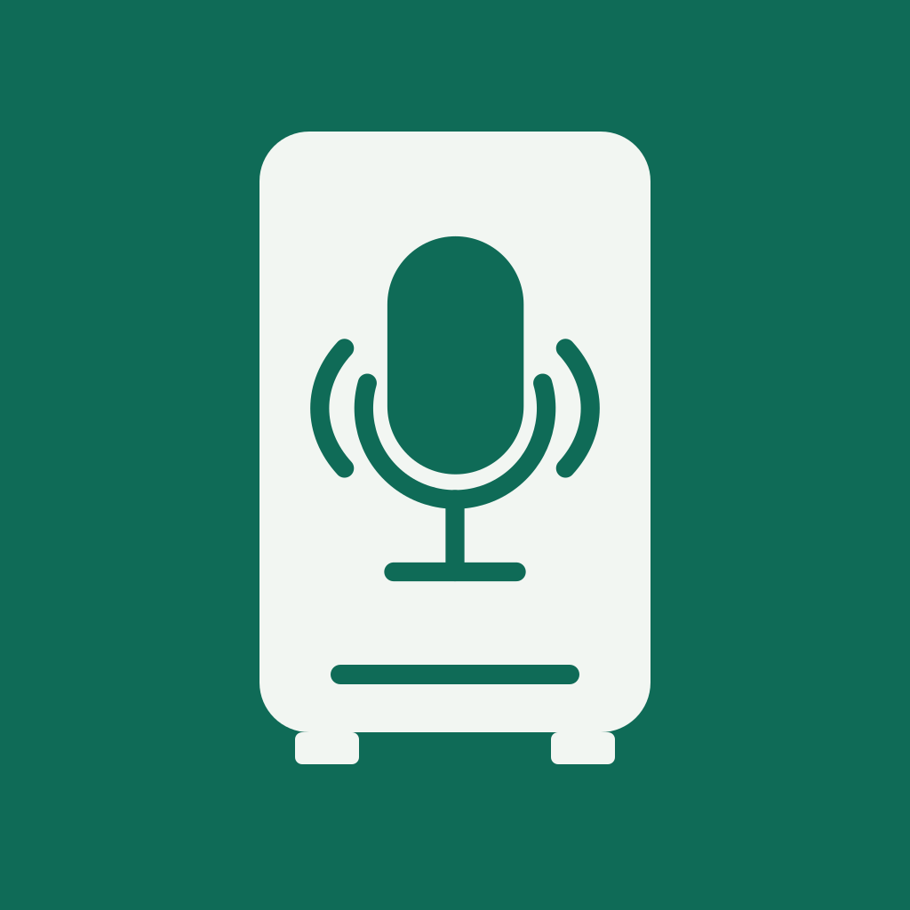
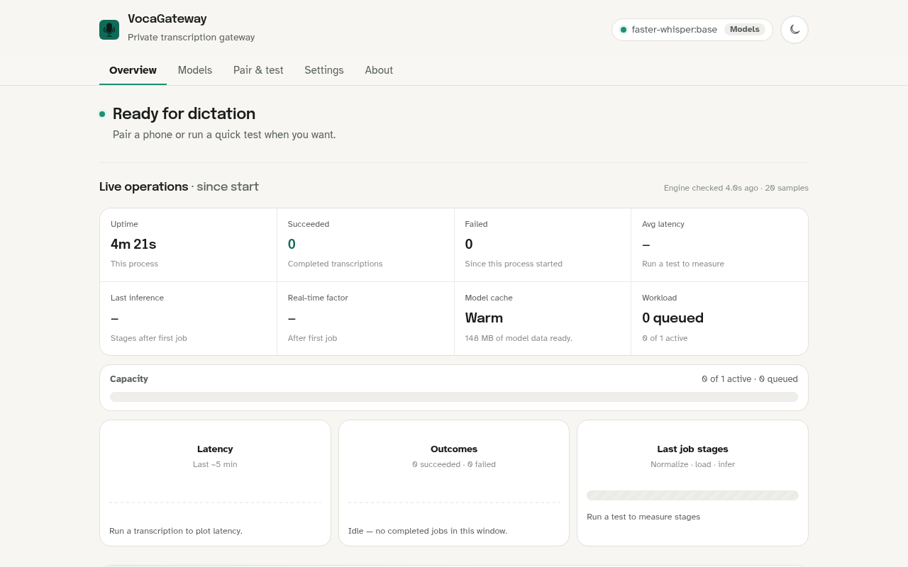
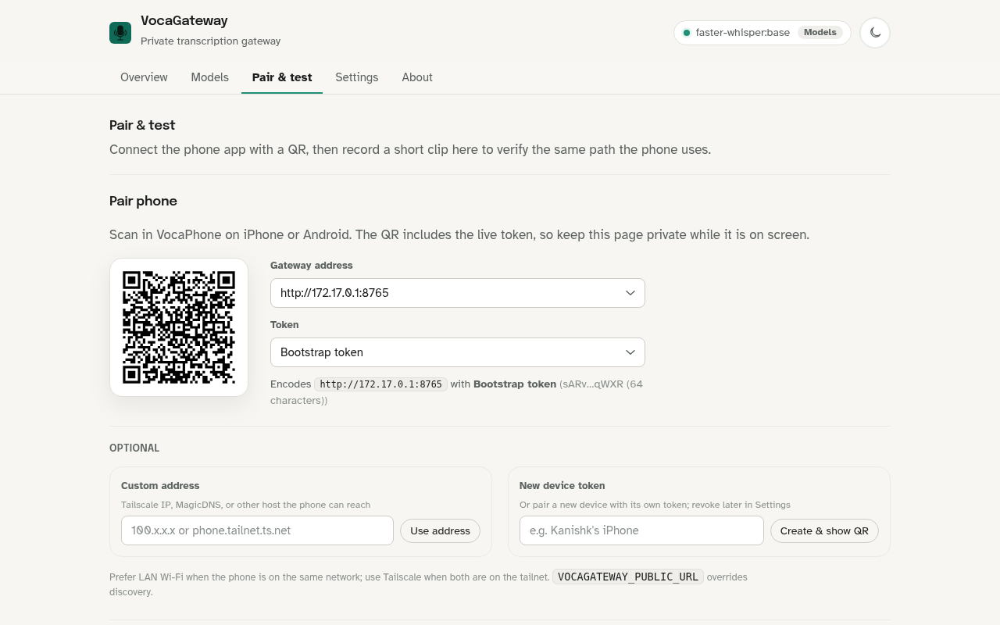

1once
run it on a host you own
Native on a Mac or a Linux box, or Docker Compose on Linux amd64/arm64. There is no Voca-hosted service and no installer to download.

optional self-hosted speech-to-text
your hardware, shared speech-to-text.
beta · macOS · Linux · Docker Compose · AGPL-3.0 · part of vocahq.com
the WebUI


Set the gateway up on hardware you control. Clients send a bounded recording. A speech-to-text model on that host returns the transcript.
Native on a Mac or a Linux box, or Docker Compose on Linux amd64/arm64. There is no Voca-hosted service and no installer to download.
After you open the WebUI with the bearer token, Pair & test shows a QR. VocaPhone on iPhone or Android reads the gateway URL and token from it.
The client records. Audio travels to this host. The selected model runs here and the transcript goes back to the app. Desktop clients are planned; VocaPhone is the current consumer.
Gateway mode is not on-device. When a client is pointed at VocaGateway, audio leaves that device and travels to the machine you configured. The gateway runs a local speech-to-text model and returns text.
Fine for a home or lab network you already trust. HTTP does not encrypt the token or the recording.
Use Tailscale Serve, another encrypted network, or a reverse proxy with a real certificate when the path leaves that LAN.
Do not publish port 8765 to the open internet. That listener carries the bearer token and the audio.
Status is Beta. There is no packaged installer. Run Compose or
native from the
v0.1.0 tag,
not from main. After the process
starts, open
http://127.0.0.1:8765/, enter the token, download a
model, and wait until Overview says Ready for dictation.
native macOS
brew install ffmpeg whisperkit-cli whisper-cpp
uv sync --all-groups --extra engines --extra apple
uv run vocagatewaynative Linux
sudo apt install ffmpeg
uv sync --all-groups --extra engines
uv run vocagatewayDocker Compose
cp .env.example .env
printf 'VOCAGATEWAY_TOKEN=%s\n' "$(openssl rand -hex 32)" >> .env
docker compose up --detach --build
command name:
vocagateway is the CLI. Deprecated
vocaphone-server and related aliases still work for one
cycle. The product is VocaGateway. Full host notes, Tailscale, and
reverse-proxy setup live in the
README
and
deployment guide.
Start at vocahq.com for the directory. Each product keeps its own site, status, and source.
family home
vocahq.com Private speech-to-text across the machines you own.The current gateway client. Android has a public beta. iPhone is a public TestFlight beta capped at 1,000 seats, or an iOS 17+ source build. On-device is the default path; this gateway is optional.
System-wide voice typing for real Linux desktops. On-device speech-to-text on X11 and Wayland. Gateway shipping from the desktop app is planned.
A native menu bar app for Apple Silicon. Hold a hotkey, speak, and text appears at the cursor through an on-device speech-to-text model.
Unsigned v0.1.0-beta.1, not a store listing. Windows SmartScreen will warn. It does not expose a gateway mode today; desktop embed is planned.
No. On-device means the speech-to-text model and the audio stay on the phone or computer after the model download. Gateway mode is different: configured audio travels to the host you run. Do not collapse those two paths.
No. VocaPhone can transcribe on the phone after you download a model. Use VocaGateway when you want shared hardware, a larger model, or one service for more than one client.
VocaPhone on iOS and Android. Linux, macOS, and Windows desktop apps are planned to start this same headless server later. There is no Voca account.
A trusted LAN, Tailscale Serve (or another encrypted private network), or HTTPS on a reverse proxy. Never publish port 8765 to the public internet. HTTP does not encrypt the bearer token or the recording.
Yes. The repository is github.com/VocaHQ/vocagateway, licensed under AGPL-3.0. The rest of the family lives under the VocaHQ organization.
beta · self-hosted · optional
Start from the v0.1.0 tag, run the process, pair a phone. If you only need on-device dictation, skip this and pick a client on vocahq.com.